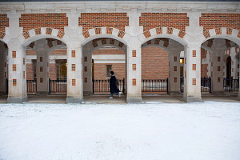
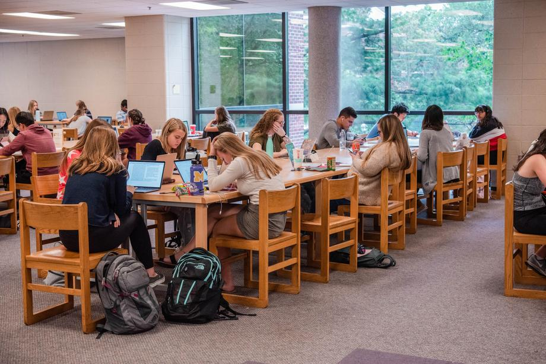
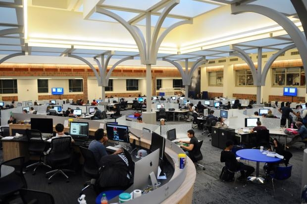

UMSI Academic Complex- North Quad
North Quad is the most convenient study space where you can directly access UMSI resources.
North Quad

Other Study Spaces
Besides North Quad, there are many other study spaces that suit your study style.
Law Library
Michigan Union
Shapiro Library

Fish Bowl

While there are many options, remember to check opening hours and find your ideal study spot!